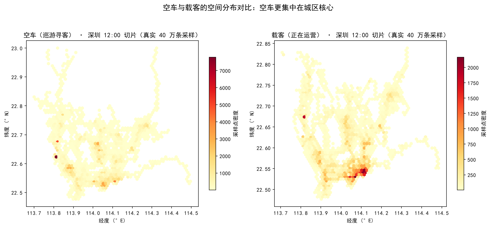

深圳：最"聪明"的一份数据
如果说北京 T-Drive 是"够用就好"的极简数据，那深圳 2014 就是一份"信息密集"的数据： 它在每条记录里额外塞进了两个北京没有的字段——是否载客（passenger）和 瞬时速度（speed）。就因为多了这两列，这份数据能回答北京回答不了的问题： 这辆车是在空车巡游找客，还是在载客赚钱？它开得有多快？
数据是 2014-10-22 当天的深圳，被切成 24 个"0_时.csv ~ 23_时.csv"的小时文件，
整份约 4,700 万行。下面我们先用真实数据看它长什么样。
字段：在"谁/何时/在哪"上多了两列
深圳数据有表头，每行 6 个字段、逗号分隔。前面 4 列和北京同构，后面两列是新东西：
- trajectory_id车辆/轨迹 ID。作用：把一行行记录连成一辆车。22223
- date当日时间
HH:MM:SS。只有时分秒，没有日期——日期藏在文件名里（哪一时.csv）。12:25:29 - lon / lat经度 / 纬度 (WGS-84)。深圳范围约 113.8°–114.6°E，22.4°–22.9°N。114.1268, 22.5740
- passenger是否载客：0=空车，1=载客。这是北京没有的"运营状态"信号，是这份数据的灵魂字段。1
- speed(km/h)瞬时速度（km/h）。直接给出，不用自己算；0 表示停着。19
passenger→ 空车/载客空间分布、上下客热点、供需缺口（哪空车多却没客）speed→ 路网速度画像、拥堵识别（速度≈0 的密集区）、驾驶行为
空车 vs 载客：城市在"找活"还是"赚钱"？
把 12 点这一个小时、约 40 万条真实记录按 passenger 分成两组，分别画成空间密度图
（颜色越亮 = 车越多）。一个问题立刻有了画面：空车和载客的车，分别爱待在哪？

空驶率 = 空车记录数 ÷ 总记录数。它衡量"车在空跑没拉客"的比例。 在我们抽样的 12 点切片里，空车占 60.1%、载客占 39.9%—— 也就是说中午这个时段，路上六成出租车是空着找客的。注意这只是单小时快照，早晚高峰的载客比例通常会更高。
速度分布：为什么一半的车"不动"？
再看 speed 这一列。把 12 点切片 40 万条记录的速度画成直方图，会看到一个很反直觉的形状：

中位数只有 8 km/h，但均值 19.3 km/h——两者差很多，说明速度不是对称分布，而是双峰/偏态的： 一大群车停在 0 km/h（等红灯、堵车、上客、路口待客），另一群在 30–80 km/h 正常行驶。 这 42% 的"零速"不是坏数据，而是城市交通的真实呼吸节奏。 把零速点密集的地方标出来，本身就是拥堵热力图。
真实样本：一辆车（22223）的 30 条记录
下面逐行来自仓库 data/shenzhen_sample.csv（源自 raw/shenzhen/... 真实切片）。
注意同一辆车 passenger 在 0/1 之间跳变、speed 也在 0–84 之间起伏——这正是运营的真实节奏：
| trajectory_id | date | lon | lat | passenger | speed(km/h) |
|---|---|---|---|---|---|
| 22223 | 12:25:29 | 114.126831 | 22.574051 | 1 | 19 |
| 22223 | 12:26:59 | 114.124153 | 22.574183 | 1 | 19 |
| 22223 | 12:16:39 | 114.119865 | 22.568617 | 1 | 62 |
| 22223 | 12:08:43 | 114.116837 | 22.550283 | 1 | 21 |
| 22223 | 12:30:22 | 114.108932 | 22.576283 | 1 | 38 |
| 22223 | 12:52:35 | 114.094185 | 22.543400 | 1 | 69 |
| 22223 | 12:38:04 | 114.079803 | 22.572884 | 1 | 48 |
| 22223 | 12:00:45 | 114.095398 | 22.540466 | 0 | 3 |
| 22223 | 12:03:29 | 114.101982 | 22.541950 | 1 | 22 |
| 22223 | 12:30:28 | 114.108398 | 22.575968 | 1 | 35 |
| 22223 | 12:30:07 | 114.109497 | 22.576584 | 1 | 6 |
| 22223 | 12:29:55 | 114.110130 | 22.576700 | 1 | 45 |
| 22223 | 12:18:33 | 114.122902 | 22.571083 | 1 | 0 |
| 22223 | 12:21:41 | 114.123650 | 22.576500 | 0 | 35 |
| 22223 | 12:22:25 | 114.126999 | 22.575768 | 0 | 28 |
| 22223 | 12:40:46 | 114.067665 | 22.558216 | 1 | 84 |
| 22223 | 12:46:49 | 114.067902 | 22.546734 | 0 | 45 |
| 22223 | 12:48:19 | 114.072815 | 22.542850 | 0 | 34 |
| 22223 | 12:48:44 | 114.075516 | 22.542933 | 0 | 44 |
| 22223 | 12:37:49 | 114.081467 | 22.572468 | 1 | 40 |
| 22223 | 12:37:42 | 114.082130 | 22.572283 | 1 | 43 |
| 22223 | 12:47:19 | 114.068871 | 22.543034 | 0 | 56 |
| 22223 | 12:41:44 | 114.067764 | 22.548283 | 1 | 82 |
| 22223 | 12:44:19 | 114.063553 | 22.547533 | 0 | 25 |
| 22223 | 12:25:14 | 114.127380 | 22.574533 | 1 | 21 |
| 22223 | 12:17:33 | 114.122353 | 22.570833 | 1 | 25 |
| 22223 | 12:11:51 | 114.119164 | 22.559151 | 1 | 55 |
| 22223 | 12:08:34 | 114.116669 | 22.549351 | 1 | 56 |
| 22223 | 12:53:20 | 114.098953 | 22.543400 | 1 | 0 |
| 22223 | 12:00:00 | 114.094986 | 22.541451 | 0 | 13 |
speed=0 但 passenger=1 的（如 12:18:33）——说明乘客在车上、车却停着（等红灯/堵车）；
③ date 字段没有日期，必须结合文件名才完整——这是用这份数据第一个要小心的坑。
仔细看：这份"完美"数据也有裂缝
一份好数据不代表没有脏点。我们在 40 万条采样里发现两类值得警惕的现象，处理前必须知道：
| 现象 | 真实表现 | 意味着什么 |
|---|---|---|
| 越界坐标 | 经度最大到 119.5°E、纬度到 23.1°N——超出了深圳行政边界 | GPS 漂移或邻近城市（东莞/惠州/香港）的车被并入；画深圳地图前要先按边界裁剪 |
| 速度异常 | 个别记录速度达 120 km/h | 市区不可能，多为高速公路或定位跳变；做拥堵分析时要过滤极端值 |
| 时间字段缺日期 | date 只有时分秒 | 跨文件拼接时必须用文件名补上"哪一天/哪一小时"，否则时间轴错乱 |
speed 超过合理上限（如 120 km/h）的记为异常；
③ 用文件名补全每条记录的真实时间戳；
④ 按 trajectory_id + 时间排序，才能算每辆车的连续轨迹与行程。
它和北京有什么不同？
| 维度 | 北京 T-Drive 2008 | 深圳 2014 | 差异带来的能力 |
|---|---|---|---|
| 采样间隔 | ~10 分钟 | ~90 秒 | 深圳能看"走走停停"的细节 |
| 载客状态 | 无 | 有（passenger） | 深圳能做空驶率/供需分析 |
| 速度 | 需自己算 | 直接给 | 深圳直接做拥堵画像 |
| 规模 | 1 万辆车/周 | 单日约 4700 万行 | 深圳更密，但单日、无跨天 |